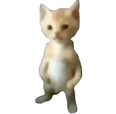
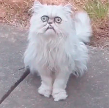
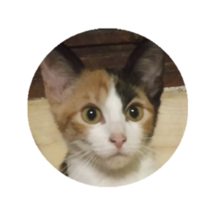
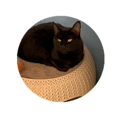
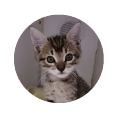

| imagen | Nombre del gato | Descripción |
|---|---|---|
|  | |
en optimas condiciones ya que no le daban alimento por suerte lo pudimos rescatar luego de una denuncia de un vecino. |
|  | |
tormentosa en la cual el llegó con múltiples heridas de las cuales ya sanó y actualmente tiene 3 años. |
|  | |
llego a nuestro hogar despues de la funa del pepe. |
|  | |
con muchas garrapatas , actualmente tiene 1 año y 6 meses. |
|  | |
se le encontro en una canasta afuera de uno de nuestros hogares. |